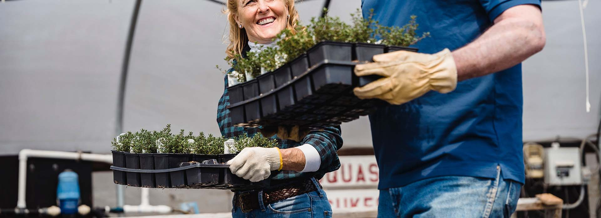
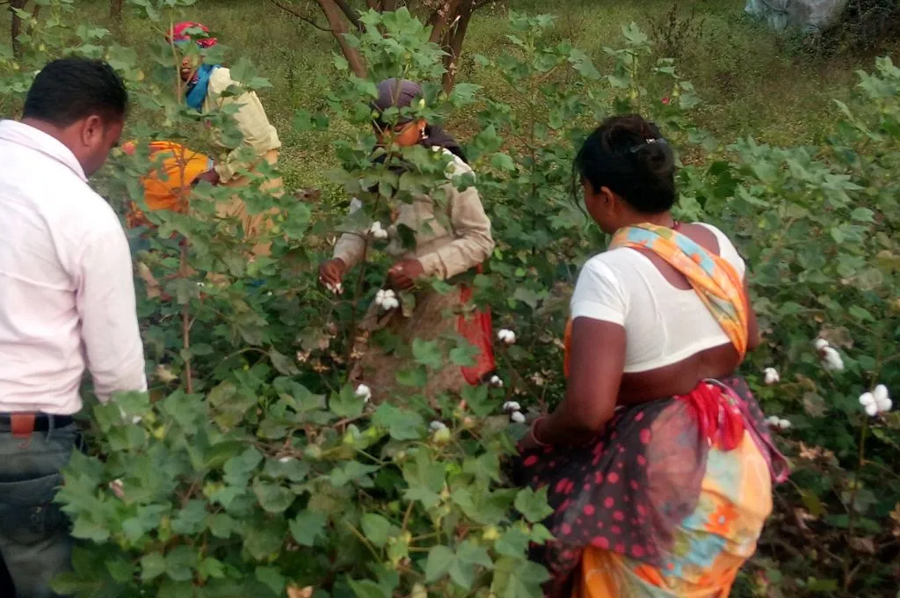

BACK TO BASICS

It goes by the philosophy

It goes by the philosophy

Organic clothing is born from the need for sustainable ways of living on this planet. Back to Basics is part of a worldwide organic agricultural movement, working towards farming and processing in tune with nature.
It is the culmination of a search for a way of life that makes a meaningful difference to the Earth.
Cotton is the most pesticide intensive crop cultivated on Earth. However, cultivation without synthetic fertilizers and poisonous pesticides ensures the best quality raw material.
We work with farmers engaged in traditional cultivation, educating them on sustainable organic practices while preserving traditional skills.

We are innovating new yarn making and weaving techniques to make use of indigenous varieties of cotton cultivated under traditional rain-fed farming systems in ecologically fragile areas. The result is an extensive and eye-catching range of products under Bed, Bath, Inner Wear, Socks, and Ready-To-Wear categories.
Back to Basics products are made with Certified Organic Cotton, as per International Standards. The cotton cultivation is certified as per United States Department of Agriculture's National Organic Program, European Union Standards and NPOP of APEDA under the Ministry of Commerce, Government of India.
All textile products are certified by the Global Organic Textile Standard (GOTS). The standard ensures organic status of the textile. It covers all aspects of processing, manufacturing, packaging, labeling, exportation, importation and distribution of cotton, to provide credible assurance to the end consumer

Made from certified organic cotton using innovative yarn making and weaving techniques, making this range popular worldwide.
Bath range is made from pure organic cotton as well as from a blend of cotton and bamboo fiber. This gives the fabric a soft and luxuriant feel. In some range, in the yarn making process itself it is blended with natural bamboo. This special blend, innovative weaving and processing techniques also create the anti-bacterial and anti-fungal properties to the bath range. They not only absorb water many times faster from your body as compared to any other towel, they also dry very fast.